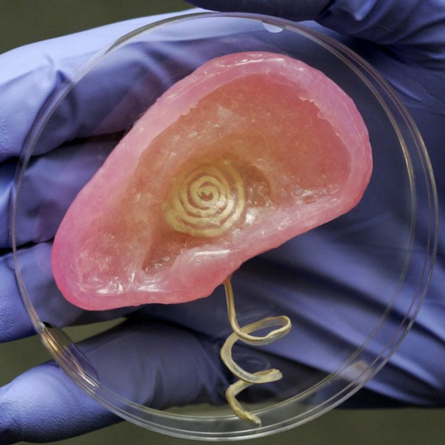

Just The Basics:

What is it
According to Wikipedia, 3d printing is "is any of various processes in which material is joined or solidified under computer control to create a three-dimensional object, with material being added together, typically layer by layer". 3d printing is what is known as additive manufacturing, this means that objects are created by adding layers one on top of another. Until recently, 3d printing was unattainable to most due to the technology being mainly undeveloped and printers being expensive. Now, 3d printing is becoming more prominent. The rise of 3d pritning could be incredibly impactful in the future. You can find 3d printers on an average college campus, and even find them in many engineering curriculums.
How to do it
The process of 3d printing requires that you either create or provide an STL file. The STL file is also known as the object file, this is the file that physically stores the object you want to print. You can create your own STL files using Blender, Cad, and Tinkercad. Once you have that, you must then position your object properly in the placement software, this ensures that your object will be centered on the plate and that hanging pieces will be supported in the printing process. Additionally, in this step, you can define attributes of the object such as wall thickness and infill density. The software in this portion greatly depends on the printer you have as many of them use their own proprietary software. From here, you will convert the STL file to a GCODE file. Now, all you do is send it to the printer, sit back, and wait.
History
The idea for the 3d printer was first patented in 1980 by Dr. Hideo Kodama. However, Kodama would not go on to develop his idea. In 1987, Carl Deckard created a laser technology that hardens powder to create a rigid structure. This is the technology that would make it possible for printers to melt materials and have them harden in a way that retained its structural integrity. In 1989, S. Scott Crum created a method of melting a polymer and dispensing it layer by layer to create a 3d object. Today we call this method extruding. In 2006, the first 3D printers became available for public purchase. They were a variant called sls printers, which used lasers to melt plastic. In 2009, the immensely popular Makerbot and Thingiverse were launched bringing. Today Thingiverse is the largest repository of 3d printing projects.
Applications
3d printing is a very hot commodity right now and is praised by many as being the future. One of the largest applications is construction and material engineering, it is possible that in the future entire homes will be completely 3d printed. One large area where 3d printing is already begining to be incorporated is in the creation of prosthetic limbs and artificial organs used for transplants. Scientists already plan on creating a filament of biological material so that they can print a brand new body part. The applications of 3d printing are seemingly limitless. It is especially applicable when you consider how much more cost effective it makes the process of creation. The desire and demand for jobs to be done by 3d printing is increasing so expect it to stick around for a while.